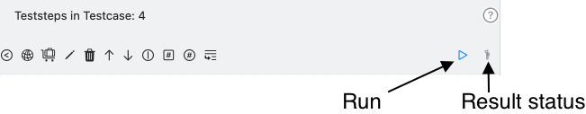
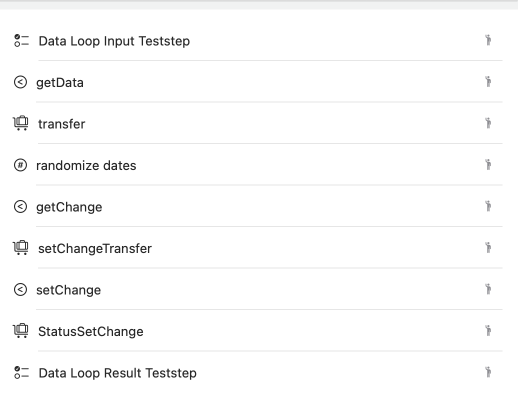
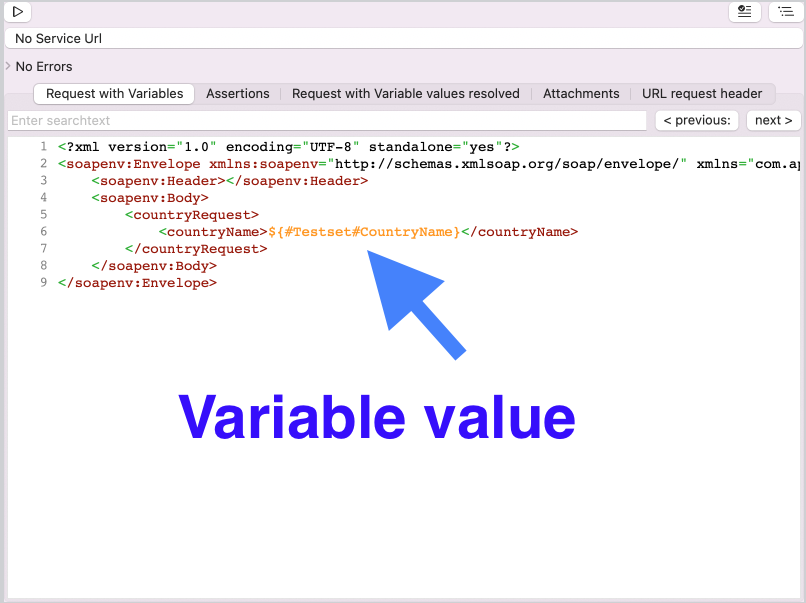

APIJockey TEST concepts
APIJockey TEST is a webservice test application. Webservices have been around for a long time now, starting with SOAP whereas current implementations focus on JSON-based implementations with or without a REST architecture. Testing web services isnt' an easy task, there is no user interface, there are no visualizable business processes, data models are based on technical structures, use keys and reference ids. Creating valid requests is time-consuming and verifying responses is even harder. APIJockey TEST will help you to create requests, assess and verify web services responses and automate this assessment to a certain degree. All information is stored in a SQLite database and backed by iCloud integration, which ensures you can access your data from different MacOS ® computers.
- instant test runs
- persisted test executions
Instant test runs
This test is available on all four test definition hierarchies.
All test runnable elements provide a play button that starts the test run. A result status icon provides visible information of the test result status.

Above: screenshot of the teststep action buttons with test run result icon
Persisted test executions
Test executions are persisted test runs. They can be started from the repository or testset list view and perform basically the same test operations as an instant test run. The difference is that the test execution results are persisted and can be accessed at any point in time. This gives you a great opportunity to get back to previous runs and compare requests and responses.

Above: screenshot of the test execution view When you select a test execution, you will see the list of testcase executions and teststeps execution, drilled down to each indivudal Random and Teststep Value Provider output value.
Test definition
APIJockey TEST organizes tests in a test definition hierarchy. A test definition describes a test case with its test steps and the assertions defined on the teststeps. That means, a test case can be passed in a test run only, when all teststeps can be run through and all assertions have passed.
Repository
First step in the test definition is the creation of a repository. You can create as many repositories as you want. A Repository contains a structure of test cases AND you can execute the contained testcases.Repositories are intended to support several container types, although APIJockey TEST currently supports one local SQLLite (specifically CoreData© an Apple product) database, only. They help you group your tests and support persisted test executions.
See, how to create a test definition Organize your repostories in the Repository list view
Testset
Once you have created a repository, you start to create Testsets. Testsets contain the actual Testcases. Testsets can be applied for various differenciations like use cases, types of tests (regression tests, new development). Testing includes several tasks, such as:
-
regressions testing
-
test new functionality
-
exploration testing
-
persisted test run executions
-
Testsets will help you to organize large sets of Testcases. Find help to manage your testsets in Testset list view
-
Testsets should not be used to differenciate test environments.
-
Testsets make also sense, when Testcases use common variable data.
Find help to manage your testsets in the Testset list view
Testcase
A testcase - represents what you want to test.
-
defines the teststeps, the assertions and validations to test a functionality.
-
can include several endpoints
-
can run with randomized data and capture data from its test steps
-
has run successfully, if all Teststeps have run successfully. There are two types of testcases:
- A testcase that runs each teststep once.
- A data based testcase that runs teststeps based on a set of input data for each entry in this data set.
Find help to manage your testcases in Testcase list view) You define the actual Testcase on a Testset. You can create an arbitrary number of Testcases on a Testset.
Teststep
APIJockey TEST supports a numbe of teststeps that you can create and arrange however you like and need to A Teststep is a concrete step in you Testcase run. - You run a SOAPTeststep or HTTPTeststep to send a request and receive a response. - You may assert this response. - You may tranfer response information to a variable which in turn is a prerequisite of subsequent teststeps. Each of these teststeps has configuration options, see how to create:
Organize your tests in the Teststep list view
-
Manage your View RandomizedValuelistTeststep
-
Manage your View Manual RandomizedValuelistTeststep
-
Manage your View DatatransferTeststep
These teststeps can be combined. You can even define data input teststeps that allow you to iterate over a set of data. The following sample demonstrate a set of web service eststeps, together with a Datatransferteststep and a Randomizeteststep.
-
The Data Loop Input Teststep defines a set of data to iterate over.
-
getData requests data from a web service
-
transfer retrieves response data and stores them in variables.
-
randomize dates provides random dates (effective dates)
-
getChange requests a quote for change to an existing contract
-
setChangeTransfer provides data from getChange to setChange
-
setChange requests the actual change on the existing contract
-
StatusSetChange store response data for the final step
-
Data Loop Result Teststep stores the current loop results in an internal table that may be exported on user request.
All this without ANY coding. 
Variables
A Variable holds a persisted value. It is intended to reuse data acroll test hierarchies and elements.
Conceptual Overview
A Variable can be defined for the four following test definition hierarchy elements. A Variable name must be unique for an element it is assigned to.
Variable Holder types
Variables can be assigned to these four test definition elements, sometimes referred to as holder types - Repository
-
Testset
-
Testcase
-
Teststep
Variable types
The variable type depends on the selected tab in the editor: - String Arbitrary Text
-
Password Any text. This types hides the value in the variable list view and during edits and be undisclosed on demand
-
absolute Date Enter a static date to reproduce tests. The Variable Editor provides a convenient means to enter the date and formatting for the service call.
-
relative Date Creates a date relative to the current date. On Test runs, this relative is re-evaluated .This allows you to enter a date of birth or a date of manufacturing and make sure the webservice under test will always calculate the same age.
-
Number Numbers need specific formatting. This formatting is provided for variables of type number
-
Boolean Booleans have 0 / 1 values. The variable editor allows use of true/false or yes/no as text for the boolean values.
Create a Variable
Variables can be created on two different places:
-
In the variables view, this is explained in Variables View
-
In the variables assignment view on Teststep ValueProviders and Random ValueProvider
Access Variable values
Variable placeholders are simply substituted by their current values, just like a makro. Variable values can be used in these contexts:
-
SOAP/HTTP Requests
-
URLs of the SOAP Request
-
XPath expression for Assertions and ValueProviders
- XQuery expressions for ValueProviders
Variable access syntax
-
Teststep variables: $(Teststep.<variablename>)
-
Teststep variables: $(Testcase.<variablename>)
-
Testset variables: $(Testset.<variablename>)
-
Repository variables: $(Repository.<variablename>)
VariableValueTransfer
When you want to update your variable from within a test step, you will use a VariableValueTransfer, they are the common component for ValueProviders to transfer data to a variable of type String.
Attachment placeholders
Attachment placeholders in SOAP Requests are not variables and use a special, but similar naming convention. see SOAP Attachments VariableValueTransfers are used among these teststeps to configure the output variable:
- DatatransferTeststep
- RandomizeTeststep
- RandomizedValuelistTeststep
- Manual RandomizedValuelistTeststep
Static and variable test data
User data, response data, derived data and random data are available for your test The most common type of data is user data, ie data that the user enters. A user will enter request data in the request editor.i

This approach is valid until request data are repeated for several tests and a change in the webservice definition, such as key lists or expected value, would mean a lot of rework. This is, where variables come into the game. 
Response Data and Derived data
A Webservice is - in general - expected to return values, there may be negative test cases, though. You can access both - request and response data - from a teststep to feed a variable, as shown above, serves as input. APIJockey.com gives two options to to access request and response data:
-
XPath
-
XQuery
-
JSONPath
In the request, derived data is just a variable as above. XQuery allows for arbitrary transformations of request and response data, so if you need to test several Web services that expect different contents, XQuery is your choice. XPath, XQuery and JSONPath can be used within DatatransferValueProviders, which in turn are part of Datatransferteststeps.
Random Data
APIJockey TEST provides a Randomteststep that allows for randomized data. You can create a list of random value providers without any coding. Typical examples are number plates or Vehicle Identification numbers where you may use a calculated String to create the random value. In the request, this is just a variable as above.
Help
APIJockey Test provides two sources of help
-
a searchable online help (this help) https://docs.apijockey.com
-
searchable webservice definitions (WSDL only, from Release 1.7.3)
Sample searchable webservice definitions
Legal Note : The url and the webservice presented below have been provided by oorsprong.org and have been available without authentication. I use these resources for the only reason to illustrate the contextual help feature of APIJockey TEST. Do not misunderstand this as any kind of endorsement for and from oorsprong.org. The request itself has been created with the built-in functionality of APIJockey TEST to create a sample from a WSDL.
Let's assume a sample request created from the WSDL.

When working with these APIs, you would probably search the XSD-files for more information.
In such a case drag with your mouse the element name that you need information about while holding the CMD-key

If you want to search for elements or types not present in the current request or response hold the CMD key while you double click with your mouse.
Be aware that for processing search with namespace prefixes, the search must be able to locate the correponding XSD-file. This is only possible, if the prefix is defined in the namespace definitions and you hold a valid XML document. If this is not the case, you can search for an element or type in a specific namespace with this notation:
-
{http://my.namespace.com/context}Elementname
-
{http://my.namespace.com/context}Typename